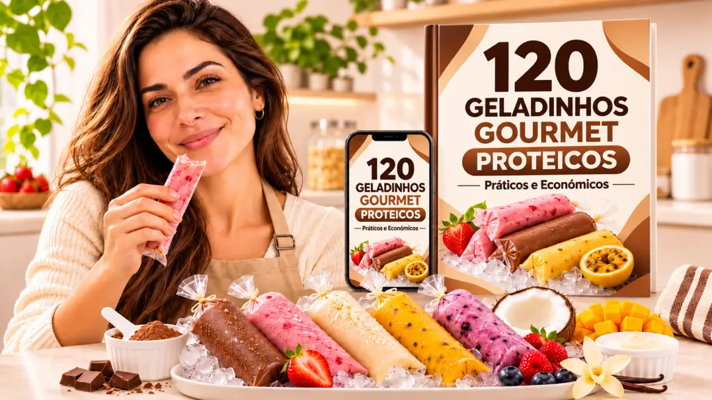
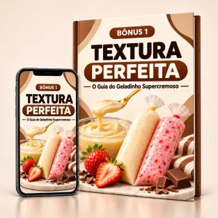
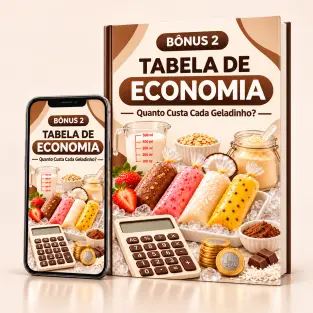
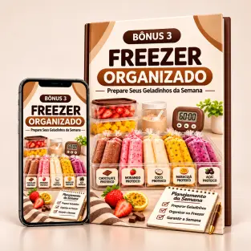
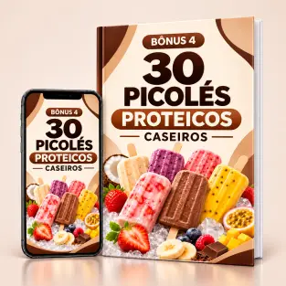
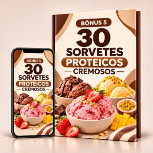
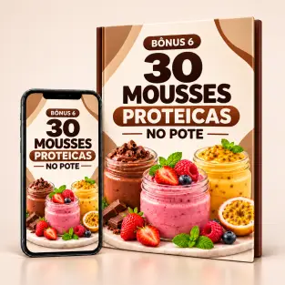

Receitas cremosas e deliciosas para
transformar sua rotina proteica em momentos de sobremesa, sem precisar gastar tanto com opções prontas de mercado.

Imagine abrir o freezer e encontrar seus sabores favoritos: chocolate, morango, coco, maracujá, doce de leite e muito mais. Tudo preparado por você, com ingredientes definidos e proteína calculada por receita.
120 receitas em 10 categorias deliciosas, com ingredientes, quantidades, estimativas de proteína e calorias, tempo de preparo, orientações de congelamento, substituições e passo a passo.
Categorias
Toque na receita para ampliar e conhecer
o material por dentro.
Sua sobremesa proteica já pode estar no freezer!
Deixe seus geladinhos ainda mais cremosos e sua rotina muito mais prática sem pagar nada a mais.

Descubra como equilibrar ingredientes, evitar cristais de gelo em excesso e melhorar a consistência dos seus geladinhos proteicos.

Aprenda a calcular o custo dos ingredientes por unidade e comparar suas versões caseiras com sobremesas proteicas prontas.

Um guia para organizar ingredientes, separar os sabores, preparar várias unidades em uma sessão e armazenar tudo corretamente.

Mais 30 receitas geladas para preparar em forminhas de picolé.

Aprenda outras maneiras de transformar ingredientes proteicos em sobremesas congeladas.

Mais 30 sobremesas cremosas para variar sua alimentação sem depender sempre de shakes e iogurtes tradicionais.
ferta especial por tempo limitado · Entrega digital pelo WhatsApp
Temos tanta convicção da qualidade do nosso material que te damos 30 dias completos para experimentar todo o conteúdo. Se por qualquer motivo você achar que não é para você, basta nos enviar um e-mail para receber 100% de reembolso.
Não precisa de sorveteira. As receitas foram pensadas para o preparo doméstico, utilizando utensílios comuns, saquinhos próprios para geladinho e freezer. Algumas combinações podem pedir liquidificador ou outro utensílio simples.
Algumas receitas podem utilizar whey protein, enquanto outras podem aproveitar ingredientes como leite em pó, iogurtes proteicos e outras fontes de proteína.
O guia apresenta os ingredientes de cada receita para você escolher as opções mais adequadas à sua rotina.
Após a confirmação do pagamento, você recebe as instruções de acesso ao material digital pelo e-mail e WhatsApp cadastrados na compra.
O PDF pode ser consultado pelo celular, tablet ou computador.
Sim. O guia possui uma categoria dedicada a receitas sem lactose.
Confira sempre os rótulos dos ingredientes utilizados e faça substituições compatíveis com suas necessidades alimentares.
O tempo varia conforme a receita. Muitas bases exigem apenas misturar ou bater os ingredientes, porcionar e embalar.
[CONTINUAÇÃO DA RESPOSTA — o texto enviado terminou em "Depois"]
Práticos, econômicos e prontos pra encaixar na sua rotina.
Quero começar agora